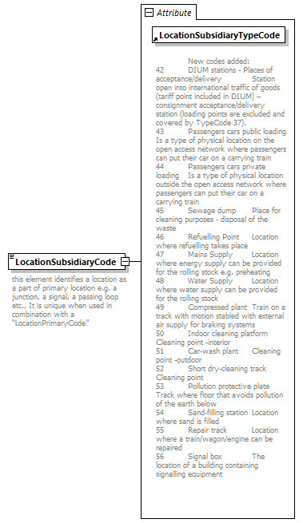

| diagram |
 |
| namespace |
http://taf-jsg.info/schemes |
| type |
extension of String1-10 |
| properties |
|
| used by |
|
| facets |
| Kind | Value | Annotation | | minLength | 1 | | | maxLength | 10 | |
|
| attributes |
| Name | Type | Use | Default | Fixed | Annotation | | LocationSubsidiaryTypeCode | derived by: xs:token | required | | | | documentation |
New codes added:
42 DIUM stations - Places of acceptance/delivery Station open into international traffic of goods (tariff point included in DIUM) – consignment acceptance/delivery station (loading points are excluded and covered by TypeCode 37).
43 Passengers cars public loading Is a type of physical location on the open access network where passengers can put their car on a carrying train
44 Passengers cars private loading Is a type of physical location outside the open access network where passengers can put their car on a carrying train
45 Sewage dump Place for cleaning purposes - disposal of the waste
46 Refuelling Point Location where refuelling takes place
47 Mains Supply Location where energy supply can be provided for the rolling stock e.g. preheating
48 Water Supply Location where water supply can be provided for the rolling stock
49 Compressed plant Train on a track with motion stabled with external air supply for braking systems
50 Indoor cleaning platform Cleaning point -interior
51 Car-wash plant Cleaning point -outdoor
52 Short dry-cleaning track Cleaning point
53 Pollution protective plate Track where floor that avoids pollution of the earth below
54 Sand-filling station Location where sand is filled
55 Repair track Location where a train/wagon/engine can be repaired
56 Signal box The location of a building containing signalling equipment
|
|
|
| annotation |
| documentation | | this element identifies a location as a part of primary location e.g. a junction, a signal, a passing loop etc., It is unique when used in combination with a “LocationPrimaryCode” |
|
| source |
<xs:element name="LocationSubsidiaryCode">
<xs:annotation>
<xs:documentation>this element identifies a location as a part of primary location e.g. a junction, a signal, a passing loop etc., It is unique when used in combination with a “LocationPrimaryCode”</xs:documentation>
</xs:annotation>
<xs:complexType>
<xs:simpleContent>
<xs:extension base="String1-10">
<xs:attribute ref="LocationSubsidiaryTypeCode" use="required"/>
</xs:extension>
</xs:simpleContent>
</xs:complexType>
</xs:element> |